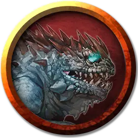

Молодой василиск
Young Basilisk
Маленький Монстр, без мировоззрения

Класс Доспеха 13 (природный доспех)
Хиты 22 (4к6 + 8)
Скорость 15 футов
| мод | спас | ||
|---|---|---|---|
| СИЛ | 13 | +1 | +1 |
| ЛОВ | 8 | −1 | −1 |
| ТЕЛ | 15 | +2 | +2 |
| мод | спас | ||
|---|---|---|---|
| ИНТ | 2 | −4 | −4 |
| МДР | 8 | −1 | −1 |
| ХАР | 7 | −2 | −2 |
Чувства тёмное зрение 60 футов, пассивное Восприятие 9
Опасность 1 (200 опыта)
Бонус мастерства +2
Особенности
Окаменяющий взгляд. Если существо начинает ход в пределах 15 футов от василиска, и они видят друг друга, василиск, если он дееспособен, может заставить существо совершить спасбросок Телосложения Сл 12. При провале существо магическим образом начинает превращаться в камень и становится опутанным. Оно должно повторить этот спасбросок в конце своего следующего хода. При успехе эффект заканчивается. При провале существо становится окаменевшим. Окаменение длится до тех пор, пока не будет использовано заклинание высшее восстановление [greater restoration] или подобная магия.
Если существо не захвачено врасплох, оно может отвести взгляд, чтобы не совершать спасбросок в начале хода. В этом случае отводящее взгляд существо до начала своего следующего хода не видит василиска. Если существо в этот период посмотрит на василиска, оно тут же совершает спасбросок.
Если василиск видит свое отражение в полированной поверхности, находящейся в пределах 30 футов от него в ярко освещенном месте, василиск из-за проклятья подвергается действию своего собственного взгляда.
Действия
Укус. Рукопашная атака оружием: +3 к попаданию, досягаемость 5 футов, одна цель. Попадание: Колющий урон 3 (1к4 + 1) плюс урон ядом 2 (1к4).
Описание
«НИКТО НЕ БУДЕТ ВЫСЕКАТЬ СТАТУЮ ИСПУГАННОГО ВОИНА. ЕСЛИ УВИДЕЛИ ТАКУЮ, ДЕРЖИТЕ ГЛАЗА ЗАКРЫТЫМИ, А УХО ВОСТРО»
— ЧЕТВЕРТОЕ ПРАВИЛО ВЫЖИВАНИЯ В ПОДЗЕМЕЛЬЯХ МИСТИКА Х
Путешественники иногда натыкаются в диких местах на объекты, которые выглядят как куски удивительно реалистичной резьбы по камню. Недостающие куски кажутся откушенными. Бывалые путешественники считают такие реликвии предупреждением о том, что где-то рядом находится василиск.
Адаптирующийся хищник. Василискам комфортно в засушливом, умеренном или тропическом климате. Его логово располагается в пещере или другом защищенном месте. Однако чаще василисков встречают под землей.
Василиски, родившиеся и выращенные в неволе, могут быть одомашнены и обучены. Обученный василиск знает, как избегать взгляда с теми, кого хозяин хочет защитить, что делает его опасным охранником. Именно из-за этого яйца василиска высоко ценятся.
Каменный взгляд. Василиски слишком тяжеловесные для охоты, но им и не нужно преследовать добычу. Взгляда василиска может быть достаточно, чтобы быстро превратить жертву в пористый камень, а сильные челюсти василиска способны крошить камень. А уже в пищеводе камень снова принимает органическую форму.
Некоторые алхимики утверждают, что знают, как обработать пищевод василиска и жидкости, находящиеся в нем. Из обработанного должным образом пищевода можно выделить масло, которое будет обращать окаменение. К сожалению, если жертва потеряла какую-либо часть своего тела, пока находилась в каменном виде, при оживлении она не восстановится. Если в каменном виде существо потеряло жизненно важный орган, например, голову, вернуть существо в первоначальное состояние при помощи этого масла будет невозможно.